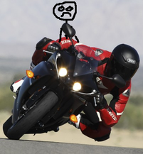
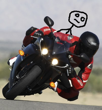
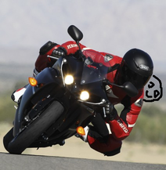

You really can just tell the rider to take it easy, get on, and ride. It's not hard. These are just a bunch of tips to make it more pleasant for everybody.
Shifting weight around causes a bike to steer toward the direction you lean (although less effectively than pressing the handlebars), so how you shift your weight around matters.
Most importantly, do not make any sudden movements. For example, if the rider is turning left, in front of an oncoming car, do not take this opportunity to lunge hard to the right to ask them what the hell they are thinking. That will make it much harder for them to avoid colliding with the car.
If you drop something, don't lunge for it.
Before getting on, be sure the rider is ready. This is a substantial weight shift that will make it a lot more difficult to hold the bike up if they're not ready.
I think the best thing to hold on to is the rider's waist. There may be a grab bar behind you, which could be useful. Holding on with your knees is apparently also useful.
To get on from the left side, while the rider is bracing the bike, put your left foot on the left peg (either yours or the rider's), then swing your right leg over the bike.
If you're going to sit perfectly still relative to anything, let it be relative to the bike. So if you look at you and the bike from the back, you keep your body in line with the bike when it leans. Do not sit up straight relative to the road, since that will result in you actively leaning the wrong way, and the rider will have to steer harder.
A better option is to look over the rider's low side shoulder. When a bike turns, it leans over, and the side of the bike closest to the ground is the low side. Look over the shoulder on the side closest to the ground. (The other side is the high side.) Again, if you find yourself on the wrong side, don't move suddenly.
  Try to relax your body. The stiffer you are, the more you will get bounced around. Especially on highways. If you know a bump is coming, you can absorb some of the shock with your legs by pushing down on the foot pegs a little.
When slowing down, it can be very nice to avoid squishing the rider into the gas tank by putting your hands on the gas tank and supporting yourself.
Try to avoid whacking your helmets together.
Motorcycles are more stable at high speeds, and less stable at low speeds. It can be very tempting to shift around as you're coming to a stop, but that's the worst time to do it. At highway speeds, if you can confirm you're not about to turn in any way, you can get up and dance around, shake your legs out, whatever.
Understand the consequences of not wearing lots of armor. I tend to wear about as little as is legally allowed, but it's important to understand that pavement does really unpleasant things to bodies at highway speeds, and regular clothing counts for basically nothing. A very responsible option might be a full face helmet, full armor suit (jacket and pants, preferably attached), gloves, and boots.
Keep clear of the exhaust, it gets incredibly hot, and may be very close to your foot pegs. Headers can burn bare skin instantly, and melted shoe is a real pain to clean off.
Ask the rider how long they've been riding, how much experience they have with pillions, how long they've been riding the exact bike you're riding, and what sort of crash history they have. For example, I've been riding since 2004, I've been riding my XX since 2006, have ridden with pillions a bunch, and have dropped bikes three times: Two at about 0 mph, and one on a race track where I was intentionally pushing the limits of traction.
Establishing methods of communication by tapping and gesturing can be really useful. Like when you get on the bike, a couple taps to indicate you're ready to go. Or a couple taps and then pointing at a place you want to stop, or maybe pointing down to indicate that you need to pull over immediately.
Talk about your feelings about speed. People have very different feelings about the sensation of nearly falling off the back of the bike under hard acceleration. Even varying from day to day. From mortal terror, to cackling with glee.
I think the most useful pillion experience I had was that the second time I rode, I closed my eyes and tried to figure out what felt right. After I got the hang of what felt right, I started opening my eyes to see what position we were in at various times.
I noticed I was keeping my center of gravity very low in my belly, and aligning my spine such that it was perpendicular to the force of gravity by feel. This leads to an image in my mind of toy racetracks that curve sideways on turns to account for the way momentum interacts with gravity to create a force vector that is diagonal between the two.
In spending time with my eyes closed, I also found I could angle my spine forward and back to deal with acceleration and deceleration, which meant I did not have to hold as tightly to the driver during those times. I still always have my hands ready to hang on, but I've noticed drivers appreciate when I can absorb most of the Newtonian physics using the structure of my body, instead of just my hands.
Because of this experience, I would definitely recommend riders new to pillion should try very hard to spend some time with their eyes closed. Even if they are uncomfortable, perhaps especially if they are uncomfortable, decreasing the sensory input involved will help their bodies pay more attention to what feels stable.
Other people's pages about pillioning: